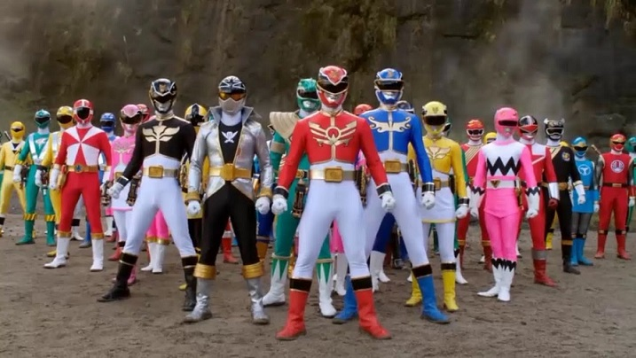
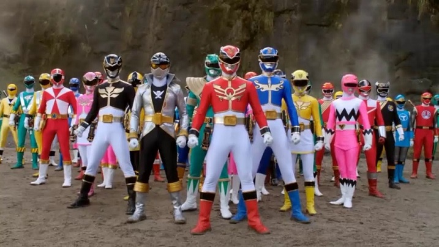

仮面ライダー

石ノ森 章太郎
いしのもり しょうたろう。1938年 - 1998年。石ノ森 章太郎は漫画家でした。
サイボーグ009、スーパー戦隊（パワーレンジャー）と仮面ライダーを作りました。
仮面ライダーは1971年に始まりました。本郷 猛（ほんごう たけし）はショッカーというテロ組織に戦いました。

いしのもり しょうたろう。1938年 - 1998年。石ノ森 章太郎は漫画家でした。
サイボーグ009、スーパー戦隊（パワーレンジャー）と仮面ライダーを作りました。
仮面ライダーは1971年に始まりました。本郷 猛（ほんごう たけし）はショッカーというテロ組織に戦いました。